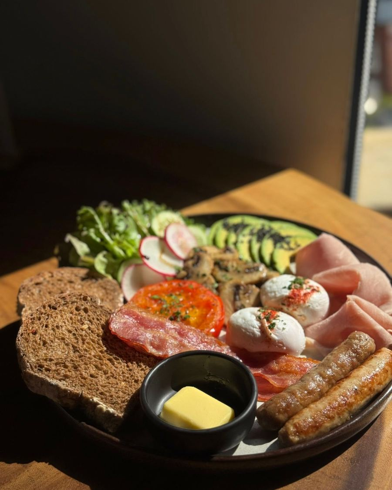

Today at Gio
Prices in baht from Gio's printed menu, March 2026. Breakfast is served all day.
Breakfast
Gio Mixed Grilled Breakfast390
Gio Classic Breakfast325
Gio Croissant Breakfast270
Green Garden Breakfast, vegan250
Salmon Benedict280
Parma Ham Egg Benedict320
Toast, croissant, bagel
Salmon cream cheese toast270
Avocado eggs on toast200
Croissant parma ham and burrata350
Croissant ham and cheese180
Bagel salmon avocado280
Vegan bagel180
Sweet
Mango smoothie bowl200
Pancake banana175
Waffle fresh fruit195
French toasted200
Homemade gelato, 2 scoops95
Cakes and pastries change daily.
Salads
Burrata and rocket350
Gio mixed salad280
Vegan bowl220
Coffee, hot or iced
Espresso, single or double70 / 90
Cappuccino85 / 95
Flat white85
Matcha latte100 / 110
Espresso tonic125
Coconut coffee125
Oat, almond, coconut or soy milk +20.
Juice and smoothies
Mango smoothie115
Mango passion fruit135
Juice boosters, no sugar125
Fresh coconut80